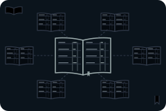
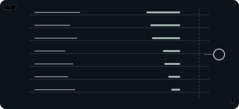
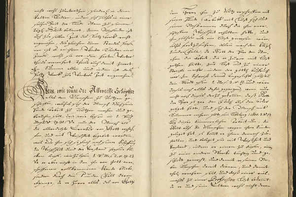

Samme netværk. Fire forskellige forretninger.
Mining, handel, udstedelse og tjenester omkring netværket er forskellige roller. Her er det selskabernes produkter og indtægter, du kan undersøge, ikke et kursmål for kryptovaluta.
Et kryptonetværk er en fælles regnskabsbog. Netværket registrerer og kontrollerer, hvem der ejer hvad. Temaet samler de selskaber i fonden, der arbejder omkring sådan en bog. De gør det på fire meget forskellige måder. Fonden ejer aktier i selskaberne, ikke selve kryptovalutaen. Siden kan ikke vise, hvor meget af selskabernes omsætning der kommer fra krypto, for det kan ikke opgøres samlet.
Illustration: NewDeal Invest.

Hvilken aktivitet giver selskabet en indtægt?
Citatet beskriver Mads Christiansens syn i juli 2025. Den særskilte gennemgang af stablecoins og GENIUS Act ligger på fintechsiden.
“Tidligere var reguleringen baseret på gamle love, som blev fortolket frit af regulatorer”Mads Christiansen, fondschef og medstifter af NewDeal Invest · 07.07.2025
Uge 27 - Makrodata sætter dagsordenen ↗
Fonden
Omkring 4 kroner af hver 100
4,07%
Krypto fylder 4,07 % af fonden, fordelt på 17 selskaber. Det er det niende største af fondens 12 temaer.
Alle procenter på siden er andele af hele fonden, afdelingen PMINDI (NewDeal Invest klasse n, den udloddende andelsklasse, der udbetaler udbytte) pr. 16.10.2026.
Krypto er et af de 12 temaer, NewDeal Invest deler fondens selskaber op i.
Små andele
Intet af de 17 selskaber fylder mere end 0,52 % af fonden. De fire største, CleanSpark, Coinbase, Bitdeer og Circle, er tilsammen knap halvdelen af temaet.
Krypto
Hovedbogen
Andel af hele fonden, afdelingen PMINDI pr. 16.10.2026
I midten står bogen. Omkring den står fire roller. Tallet ved hver rolle er dens andel af fonden. Tryk på en rolle for at se, hvad selskaberne gør, og hvem de er.
Skriver i bogenMining · 4 selskaber · 1,57 %
Hvad selskaberne gørStore haller med specialcomputere hjælper med at kontrollere og skrive nye poster i bitcoins bog. Netværket belønner dem med nye bitcoin og gebyrer. Det arbejde kaldes mining.
Læs mere
Sådan tjener selskaberne pengePå belønningen fra netværket. Strøm og udstyr er de store udgifter. Riot udvandt 5.686 bitcoin i 2025, ca. 15,6 om dagen.
Flere af minerne bygger nu også datacentre. Det kan du læse om på siden Datacentre.
Tryk på et selskab for at se, hvad det laver.
Åbner døren til bogenHandelsplatforme · 4 selskaber · 1,26 %
Hvad selskaberne gørKunderne handler og opbevarer kryptovaluta og andre kryptoaktiver gennem en app.
Læs mere
Sådan tjener selskaberne pengeIsær på kundernes handel og på tjenester omkring deres beholdninger. Coinbases kunder handlede for 1.221 mia. dollars i 2025. Det svarer i størrelse til ca. 2,6 gange Danmarks BNP. Det er værdien af handlerne, ikke Coinbases omsætning.
Gemini har meddelt, at selskabet afvikler driften i Storbritannien, EU, andre europæiske lande og Australien (05.02.2026).
Tryk på et selskab for at se, hvad det laver.
Ejer en beholdning i bogenEjer især én kryptovaluta · 7 selskaber · 0,75 %
Hvad selskaberne gørDeres vigtigste ejendel er en beholdning af én bestemt kryptovaluta. Kun ét af de syv, Strategy, ejer især bitcoin. De andre ejer især ether, solana eller HYPE (tre andre kryptovalutaer). Strategy ejede ca. 672.500 bitcoin ved udgangen af 2025, ca. 118 års udvinding hos Riot.
Læs mere
Sådan tjener selskaberne pengeForskelligt. Nogle har en anden forretning ved siden af, fx software hos Strategy. Bit Digital får det meste af sin omsætning fra at leje computerkraft ud til AI (cloud-tjenester).
Tryk på et selskab for at se, hvad det laver.
Udsteder digitale dollars i bogenStablecoins · 2 selskaber · 0,49 %
Hvad selskaberne gørEn stablecoin er en digital mønt, der skal svare til én dollar. Circle udsteder USDC og bytter den tilbage til dollars, én til én. Pengene bag mønterne ligger i reserver.
Læs mere
Sådan tjener selskaberne pengeCircle tjener især renter på reserverne. Det var næsten hele omsætningen i 2025.
Det andet selskab, CSLM Digital Asset Acquisition Corp III, er et skalselskab: et selskab uden egen drift, som er stiftet for at gå sammen med et andet selskab. Det har aftalt at gå sammen med First Digital Group (06.10.2026). Sammenlægningen er ikke gennemført pr. 24.10.2026.
Tryk på et selskab for at se, hvad det laver.
Cirklens areal svarer til rollens andel af fonden. Bogen har fast størrelse, fordi den er netværket og ikke en andel.
Mærket ved et selskab betyder, at selskabet også laver noget, der hører til temaet Datacentre eller Fintech. I fondens opdeling tælles selskabet kun med her.


Naboerne
Også med en fod i krypto
Seks af temaets selskaber, CleanSpark, Bitdeer, Riot Platforms, Keel Infrastructure, Galaxy Digital og Bit Digital, laver også noget, der hører til temaet Datacentre. Coinbase og Circle laver også noget, der hører til temaet Fintech. I fondens opdeling tælles de otte selskaber kun med her.
Omvendt driver fire selskaber under Datacentre også bitcoin-mining. To selskaber under Fintech har også en kryptodel: Robinhood (0,19 %) og Figure (0,10 %). De seks tæller ikke med i temaets 4,07 %.
IREN (tidligere Iris Energy) driver også bitcoin-mining, men er ved at bruge sin strøm og sine haller til at leje computerkraft ud til AI i stedet (AI-cloud). Selskabet står under Datacentre.
- IRENHovedtema: Datacentre0,65 % af fonden
- Core ScientificHovedtema: Datacentre0,37 % af fonden
- Cipher Digital (tidligere Cipher Mining)Hovedtema: Datacentre0,34 % af fonden
- TeraWulfHovedtema: Datacentre0,09 % af fonden
- RobinhoodHovedtema: Fintech0,19 % af fonden
- FigureHovedtema: Fintech0,10 % af fonden
Set udefra
Her er udvalgte opslag og videoer fra medier og selskaber. De er ikke fondens holdning.
CoinDesk @CoinDesk · på engelsk
CoinDesk ejes af Bullish, som er blandt fondens selskaber.
Kort fortalt Ifølge CoinDesk har en amerikansk bankmyndighed, OCC, lavet den første endelige regel under den nye lov om stablecoins. Handelspladser for krypto skal nu søge godkendelse af de bonusordninger for stablecoins, som de allerede har.
Bloomberg @business · på engelsk
Kort fortalt Ifølge Bloomberg lancerer JPMorgan en digital udgave af bankindskud på Ethereum. Dermed udvider banken sit arbejde med betalinger via blockchain, den teknik, som bogen i et kryptonetværk bygger på.
JPMorgan er ikke blandt fondens selskaber pr. 16.10.2026.
Bloomberg @business · på engelsk
Kort fortalt Ifølge Bloomberg er CryptoBilis, en malaysisk forhandler af små enheder, der gemmer koderne til krypto (hardware-tegnebøger), kommet i centrum af en efterforskning af tyverier fra enhederne. Bloomberg skriver, at forskere, der følger handlerne i bogen, har anslået tabene til over 90 mio. USD.
Opslagene er udvalgt af teamet bag NewDeal Invest. Afsenderne og de nævnte selskaber står ikke bag denne side, og opslagene er ikke fondens vurdering.
Læs mere: to selskabers egne videoer
Det skal man vide om temaet
- Aktier, ikke mønter. Fonden ejer aktier i selskaberne. Det er ikke det samme som at eje en kryptovaluta direkte.
- Kryptokurser. Prisen på kryptovaluta svinger meget. Det påvirker værdien af beholdningerne, minernes indtægt, som udbetales i bitcoin, og ofte hvor meget kunderne handler på platformene. Kilde: Riot Platforms, kvartalsrapport (10-Q) pr. 30.06.2026.
- Forskellige forretninger. Mining, handel, beholdninger og stablecoins tjener penge på hver sin måde. Et selskab kan klare sig helt anderledes end et andet i samme tema.
- Strøm og udstyr. Minerne har store udgifter til strøm og specialcomputere.
- Kundernes aktivitet. Handelsplatforme tjener mindre, når kunderne handler mindre.
- Regler. I EU gælder fælles regler for kryptoaktiver (MiCA), og i Danmark giver Finanstilsynet tilladelserne. Nye regler kan ændre forretningen (Finanstilsynet, MiCA (åbner i nyt vindue)).
- Sikkerhed. Kryptoaktiver kan blive stjålet, fx hvis nogen får fat i de koder, der giver adgang til dem. Det kan ramme både de selskaber, der opbevarer krypto for kunderne, og dem, der selv ejer en beholdning.
Kilder: Finanstilsynet og selskabernes årsrapporter. Se Kilder og kreditering.
Videre
Det hænger sammen
Kilder og kreditering
Tal
- Andele: afdelingen PMINDI pr. 16.10.2026 (fondens data). Temaer og roller: NewDeal Invests egen opdeling.
- Selskaberne: deres egne årsrapporter og kvartalsrapporter til SEC: CleanSpark (åbner i nyt vindue), Coinbase (åbner i nyt vindue), Bitdeer (åbner i nyt vindue), Circle (åbner i nyt vindue), Galaxy Digital (åbner i nyt vindue), Gemini (åbner i nyt vindue), Riot Platforms (åbner i nyt vindue), Keel Infrastructure (åbner i nyt vindue), Bit Digital (åbner i nyt vindue), Hyperliquid Strategies (åbner i nyt vindue), Bitmine (åbner i nyt vindue), CSLM Digital Asset Acquisition Corp III (åbner i nyt vindue), Upexi (åbner i nyt vindue), Bullish (åbner i nyt vindue), Sharplink (åbner i nyt vindue), Strategy (åbner i nyt vindue), DeFi Development (åbner i nyt vindue), IREN (åbner i nyt vindue).
- Gemini: selskabets meddelelse 05.02.2026 om at afvikle driften i Storbritannien, EU, andre europæiske lande og Australien, gengivet i Geminis kvartalsrapport pr. 30.06.2026 (åbner i nyt vindue).
- CSLM: aftale om at gå sammen med First Digital Group af 06.10.2026, indberettet til SEC 07.10.2026 (8-K) (åbner i nyt vindue).
- Coinbases handelsvolumen, Riots udvundne bitcoin, Strategys beholdning og Circles omsætning: selskabernes årsrapporter for 2025, linket ovenfor.
- Danmarks BNP 2025: Danmarks Statistik, tabel NAN1 (åbner i nyt vindue). Omregning til kroner med Nationalbankens årsgennemsnit for 2025, tabel DNVALA (åbner i nyt vindue). Omregninger og sammenligninger er vores egne beregninger.
- Regler: Finanstilsynet, MiCA (åbner i nyt vindue) og Finanstilsynets praksis på markedet for kryptoaktiver (åbner i nyt vindue), hentet 24.10.2026. GovInfo, Public Law 119-27 (GENIUS Act) (åbner i nyt vindue), godkendt 18.07.2025.
Billeder, video og opslag
- Tegninger, ikoner og videoplakater. Illustration: NewDeal Invest.
- Foto af hovedbogen: Hovedbog for buntmagerlauget i Leipzig (åbner i nyt vindue), Wikimedia Commons. Foto: Stadtmuseum Leipzig, CC BY 3.0 (åbner i nyt vindue), beskåret.
- Videoer: WIRED, “Inside the Largest Bitcoin Mine in The U.S.”, 16.08.2021. IMF, “What Are Stablecoins? | Back to Basics”, 01.09.2022. Circle, “What is USDC? | Episode 3”, 04.11.2025, selskabets egen video. Galaxy, “Helios: From BTC Mine to Operational AI Data Center”, 28.04.2026, selskabets egen video. Videoerne vises fra YouTube, først når du trykker på dem.
- Opslag: CoinDesk og Bloomberg på X. CoinDesk ejes af Bullish, som er blandt fondens selskaber. Opslagene vises først, når du trykker på dem.
- Logoer tilhører de enkelte selskaber.